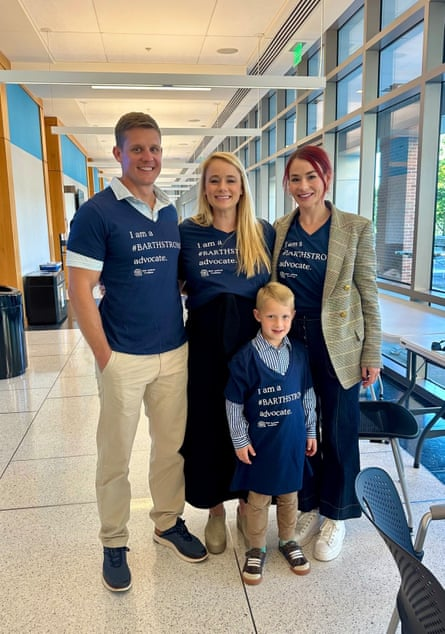
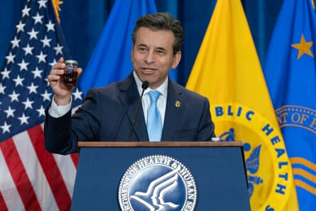

US drug regulators have increasingly signaled a focus on faster approvals and rare diseases, but patients with ultra-rare ailments fear they are falling through the cracks, especially given challenges to conducting clinical trials .
One drug, elamipretide, garnered a narrow recommendation from independent advisers for the US Food and Drug Administration (FDA), but the agency rejected the drug’s application in May and recommended another potential pathway for approval.
Patients and advocates worry about new rules on who may receive the medication during this process, and whether the drug will reach approval before the pharmaceutical company runs out of funding for it.
It underscores the challenges of making progress on rare and ultra-rare diseases while also making sure treatments are safe and effective.
Hope Filchak is a sassy four-and-a-half-year-old who loves swimming in the lakes and pools near her home in Gainesville, Georgia. She’s also deaf and blind, with some functional vision in one eye and hearing with an aid in one ear. Hope was born with an extremely rare mitochondrial condition called MLS syndrome, of which there were only 64 documented cases in the US as of 2018.
MLS syndrome, for Hope, causes a potentially life-threatening heart condition called cardiomyopathy, which can make her heart pump blood less efficiently. In February 2024, she started sleeping about 17 hours a day, and her speech began regressing.
An echocardiogram revealed that Hope’s heart function had dropped about 14 percentage points, into potentially hazardous territory. She then started taking elamipretide, an investigational drug for mitochondrial conditions.
“Pretty soon, honestly, she had a lot more energy,” her mother, Caroline Filchak, said. Most importantly, her heart stabilized.
Ben and Caroline Filchak with their son, Thomas, and Caroline’s sister, Anna Bower, at an FDA advisory committee meetingPhotograph: Caroline Filchak
Hope’s aunt, Anna Bower, said her niece’s “quality of life dramatically improved” and soon after, she was “running, dancing, and playing” like any other child her age.
First developed in 2004, elamipretide has a long history. Advocates for patients with Barth syndrome – another mitochondrial condition with about 150 known patients – asked Stealth BioTherapeutics to pick up the drug in 2014 and shepherd it through the regulatory process. Stealth submitted its first application to the FDA in 2019, and then it went through four different review divisions at the agency.
In an October 2024 meeting of the FDA’s cardiovascular and renal drugs advisory committee, patients and physicians spoke about the positive effects of the drug, and the advisers eventually voted 10-6 to recommend it.
“Patients and families saw the [advisory committee’s] endorsement as an encouraging sign because the FDA almost always follows its recommendation,” Bower said in June. “But last month, it didn’t.”
The FDA rejected the application in May. Internal FDA reviewers noted that the drug had not met its endpoint in phase 2 trials of 12 study participants.
“We don’t feel like they looked at a totality of evidence where the patient’s voice was heard in the decision,” Caroline Filchak said, who added that it’s been difficult to measure the effectiveness of the drug because of how rare the disease is.
The FDA did offer a new pathway to approval, Stealth said in a press release . That process takes at least eight months, though it can also take years. Stealth laid off 30% of its staff after the rejection.
Advocates such as Filchak are worried the company will not be able to continue pursuing approval.
“If [the FDA] drag their feet like they have throughout this entire process, Stealth is not going to be able to continue operations,” she said.
Under the new pathway, the medication is not available for infants. Stealth has said that 35 patients around the world are receiving the medication, and two-thirds of them are very sick infants.
In a congressional hearing in late June, the Republican representative Earl L “Buddy” Carter of Georgia asked Robert F Kennedy Jr, the secretary of the US Department of Health and Human Services, about treatments for rare mitochondrial conditions.
Carter mentioned two young constituents with these conditions, including Hope Filchak. The children “need your help in accessing life-saving medications”, Carter said, promising to follow up with Kennedy after the hearing.
For now, Hope has a three-month supply of the drug.
“For children like Hope, there are no other options,” Bower said. There are no FDA-approved medications like elamipretide, and there are no similar drugs in late-stage development.
Caroline Filchak said that this administration “does have a stated commitment to accelerating therapies for rare diseases. And it seems like this recent decision by the FDA doesn’t align with that commitment.”
FDA commissioner Marty Makary speaks during a news conference in Washington DC on 22 April.Photograph: José Luis Magaña/AP
Marty Makary, the FDA’s commissioner, recently announced plans to accelerate approval for select drugs and companies. He has also floated the use of machine learning, often called AI, to review applications quickly.
But there are already four ways for the FDA to expedite the review of new medications, and the approval speed is not the sticking point for drugs such as these, Filchak said.
Elamipretide is an example of the difficulty of developing drugs for ultra-rare conditions – and for approving them based on clinical evidence, said Holly Fernandez Lynch, bioethicist at the University of Pennsylvania Perelman School of Medicine.
“It’s not the poster child of FDA efficiency,” Fernandez Lynch said, noting the long time span and the four different review divisions at FDA.
“But it’s also not the poster child of ‘Oh my God, we have a drug that works amazingly well, and FDA is standing in the way, and why won’t they just use their regulatory flexibility?’”
The drug hasn’t been approved yet because it hasn’t met a pre-specified endpoint, Fernandez Lynch added: “If the evidence doesn’t support approval, if the systematic evidence collection doesn’t show benefit, then FDA really can’t approve it.”
The biotech company is now resubmitting data on knee strength improvement as part of its new application.
“Of course, these patients have a need. Of course, they have an altered tolerance for risk and altered tolerance for uncertainty,” said Fernandez Lynch.
“That’s the really devastating part of all of this. And it’s really heartbreaking, but it does not mean the FDA should grant approval to a product that hasn’t been demonstrated effective, because we really don’t know that it works.”
Approving a medication without this evidence could lead to issues developing other drugs for the same conditions, Fernandez Lynch said.
“People say, ‘Well, what’s the big deal? These patients have nothing. Just let them try it.’ I get that. If I was that mom, I would do the same thing, right? But the FDA has to make judgments for the population,” she said.
For Caroline Filchak, who works for a petroleum delivery company, she plans to continue advocating for her daughter and other affected children – and has even gotten the whole family involved.
“You don’t, when you think about having a kid, think that you’re going to be doing this, but you do what you’ve got to do for your kids,” she said, noting that she and her husband, Ben, took their seven-year-old son, Thomas, to the October meeting.
“We call him our baby advocate. Ever since that meeting, every night when he would say his prayers, he would pray that the FDA says ‘yes’.”